#8687 Zauberhafte Schwestern
Alternativ: Practical Magic
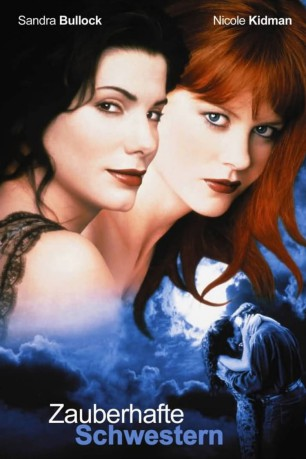 
 IMDB-Wertung: 6.2 / 10
IMDB-Wertung: 6.2 / 10  Metascore: 0
Metascore: 0 
Sally und Gillian, Abkömmlinge eines Hexengeschlechts, wachsen im Haus ihrer beiden schrägen Tanten auf. Mit ihrem Außenseitertum haben sich die hübschen Schwestern längst abgefunden, nicht aber mit dem uralten Fluch, der auf der Familie lastet: Jeder Mann, der sich in eine der mit übernatürlichen Fähigkeiten ausgestatteten Frauen verliebt, stirbt eines frühen Todes. Schlechte Karten für den Vagabunden Jimmy Angelov, der sich an Gillian heranmacht, und den Polizisten Gary Hallet, der Angelov wegen eines Mordes sucht...
Jahr: 1998
Dauer: 104 Minuten
FSK: 12
Land: USA Studio: Warner Bros.Tonspuren: DD5.1 - ,
Untertitel: Deutsch, Englisch,
Auflösung: 1080p (1920x800) Größe: 7147 MB
Genre: Drama, Komödie, Fantasy, Liebe
Regisseur:  Griffin Dunne
Griffin Dunne
Drehbuch: Alice Hoffman
Soundtrack: Alan Silvestri
Darsteller:
 Sandra Bullock als Sally Owens
Sandra Bullock als Sally Owens Nicole Kidman als Gillian Owens
Nicole Kidman als Gillian Owens- 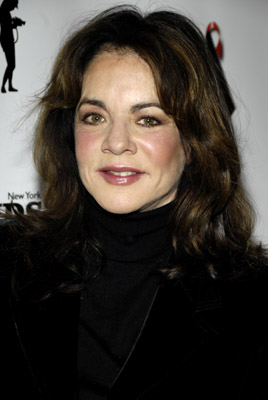 Stockard Channing als Aunt Frances
- 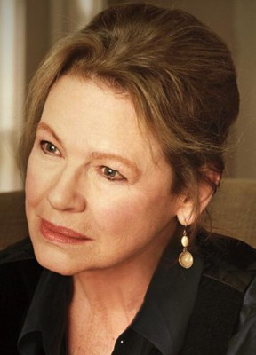 Dianne Wiest als Aunt Jet
- 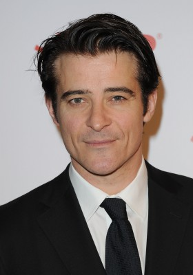 Goran Visnjic als Jimmy Angelov
- 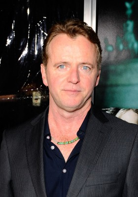 Aidan Quinn als Gary Hallet
- 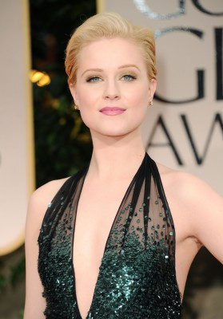 Evan Rachel Wood als Kylie
- 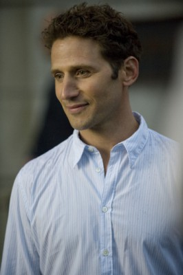 Mark Feuerstein als Michael
- Caprice Benedetti als Maria Owens
- 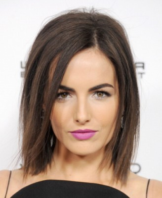 Camilla Belle als Sally @ Age 11
- Lora Anne Criswell als Gillian @ Age 10
- 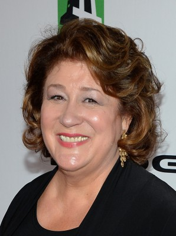 Margo Martindale als Linda Bennett
- Chloe Webb als Carla
- Martha Gehman als Patty
- 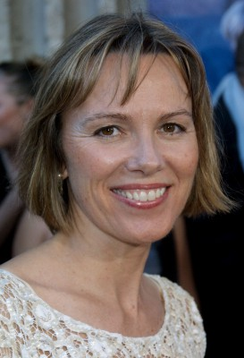 Lucinda Jenney als Sara (Adult)
- 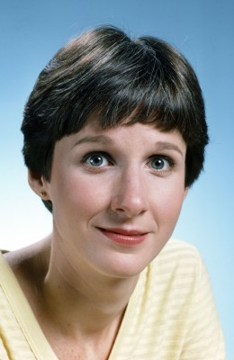 Mary Gross als Debbie
- 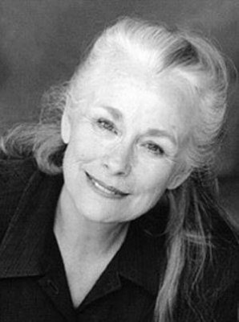 Ellen Geer als Pharmacist
- Rich Sickler als Dwight
- Peter Shaw als Jack
- Alexandra Artrip als Antonia
- Annabella Price als Lovelorn Lady
- Cordelia Richards als Nan
- Jack Kirschke als Old Man Wilkes
- Herta Ware als Old Lady Wilkes
- Courtney Dettrich als Young Sara
- John McLeod als Puritan Minister
- Trevor Duncan als Sara's Boy
- Colby Cochran als Ice Cream Boy
- Caitlyn Holley als Ice Cream Girl
- Ken Serratt Jr. als Lovelorn's Lover
- Jeanne Robinson als PTC Mom #1
- Deborah Kancher als PTC Mom #2
- Caralyn Kozlowski als Regina
Datei: X:\1998\Zauberhafte Schwestern (1998, FSK12, 1920x800).mkv seit 25.04.2018
Festplatte: HD 1996-2002
 Es gibt insgesamt 86 Filme in der Gruppe '1998'
Es gibt insgesamt 86 Filme in der Gruppe '1998'